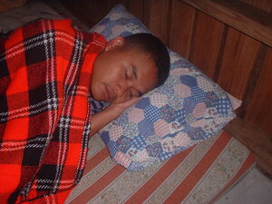

lipereng 
/lipɔdɔŋ/
v_rt.
“sleep”
1.
vi.
for someone or something (eglipereng, miglipereng/inlipereng, lipereng, agent, eg><ø-) to sleep somewhere (e.g., a house) (egliperengan, inliperengan/migliperengan/pigliperengan, liperengi, location, eg><an-)
Mahaan a eglipereng ke marusilem.
I am early to sleep at night.
O. Syn. hulep
Eng. sleep, to
Tag. matúlog
Ceb. túlog
Tigwanon: lipedeng
Dibabawon: lipedeng
WBM: lipezeng
Ilianen: lipereng
Binukid: lipedeng 'close the eyes'
Sarangani: lipedeng 'close the eyes'
Cotabato Manobo: lipedeng 'close the eyes'
Proto: lipedeng
OCM: Sleeping (513)
Online dict status: -
Usage level: F
vi.
for someone (egpakaliperang, nakalipereng, experiencer, egpAkA-) to be sleepy
Eng. sleepy, be
Online dict status: -
Usage level: M
v.
for a person or animal (egliplipereng, migliplipereng, inliplipereng, agent, eg><ø-rdpCV-) to pretend to sleep
Eng. nap; slumber; pretend to sleep; sleep, pretend to; feign sleep
Online dict status: -
Usage level: M
v.
for someone (egliplipereng, migliplipereng/inliplipereng, liplipereng, agent, eg><ø-rdpCV-) to sleep while waiting for someone or something
Eng. sleep while waiting; wait and sleep; nap while waiting; catnap while waiting
Online dict status: -
Usage level: M
2.
vi.
for cooking oil (eglipereng, miglipereng/inlipereng, lipereng, actor & patient, eg><ø-) to solidify
Eglipereng ka mentika ke maagsil ka timpu.
The oil will solidify if the weather is cold.
Ant. himata1
Eng. solidify, oil to; oil to solidify
OCM: Ethnophysics (822)
DDP: Solid, liquid, gas (1.2.3)
Online dict status: -
Usage level: M
Updated by: RJH,NJK,QDL,NJK,RAA,RJH
Last updated: 18/Apr/2017
"lipereng" in healthbook "Egmenuwen taa teg bawi kag lusungan"
"Peglipereng" in song "Keilangan ku si Hisus"
This page last updated: 28-Dec-2019
Copyright © 2009-2014, Matigsalug Language Christian Association, Inc